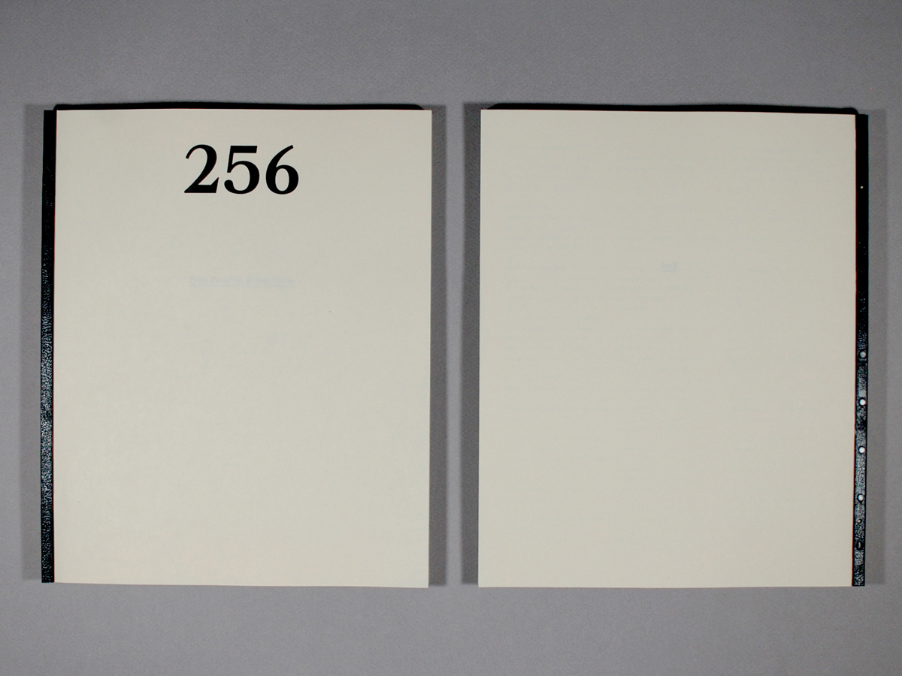
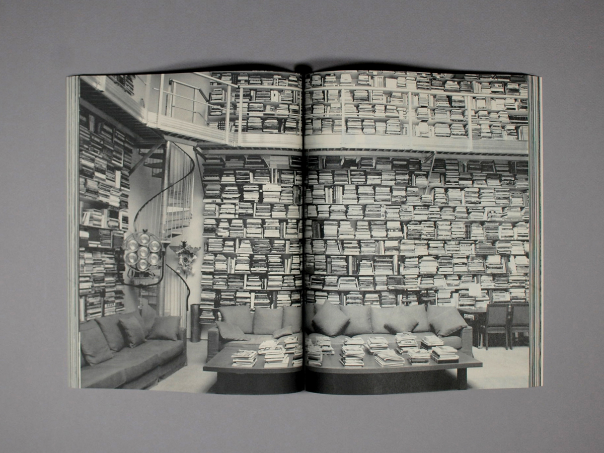
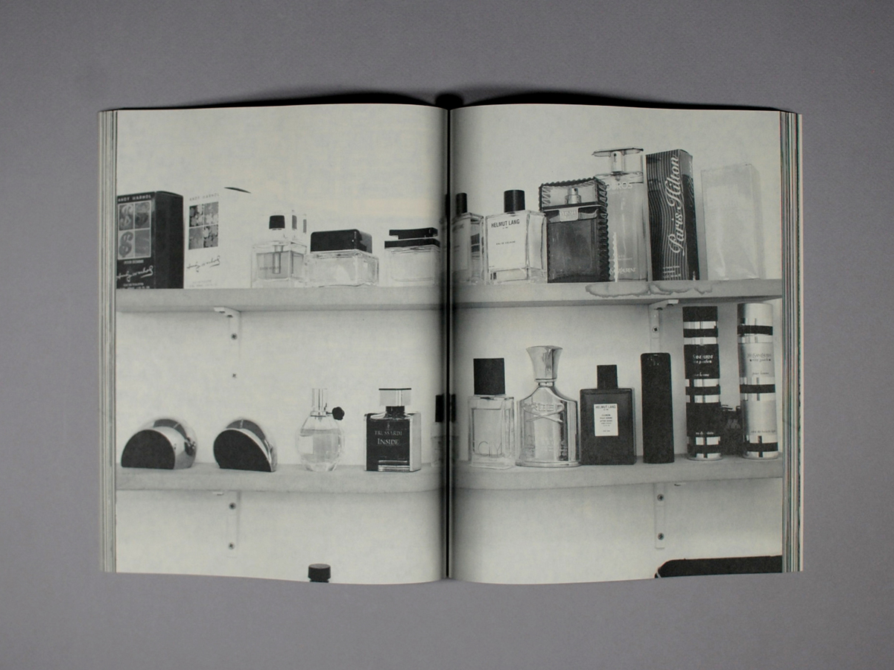
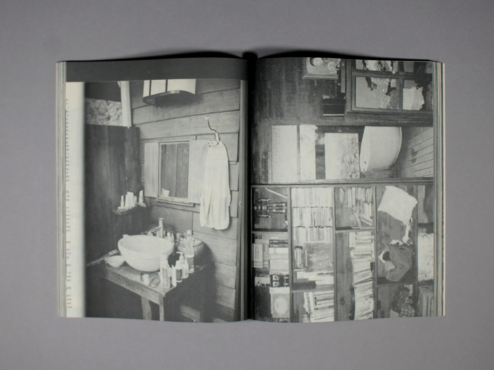
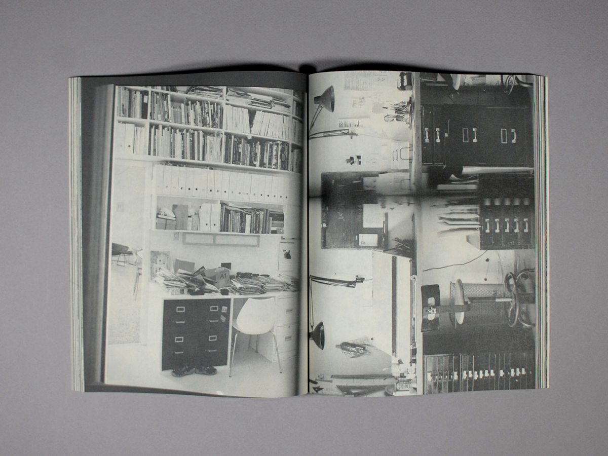
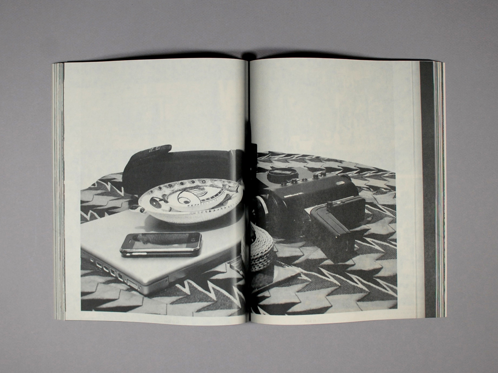

256
Zero Technology - Research Specimen
2013
About:
A collection of xeroxed images representing various elements of Pairs, Patterns, & Repetition. No design software was used in the making of this book.
Zero Technology - Research Specimen
2013
About:
A collection of xeroxed images representing various elements of Pairs, Patterns, & Repetition. No design software was used in the making of this book.
Images Sourced from:
Apartamento,
Frame,
Mark,
Conveyor Magazine,
Kinfolk Magazine,
Hello Mr,
Aperture,
Wax Magazine,
Hobo Magazine,
The Selby,
Issues Printed - 3
Issues Printed - 3







